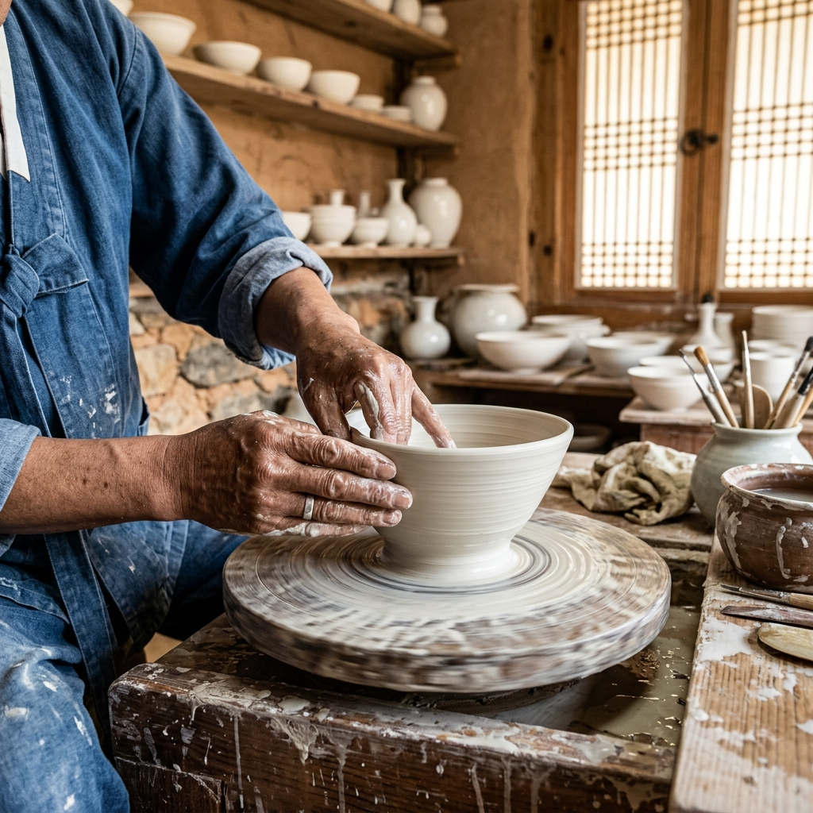
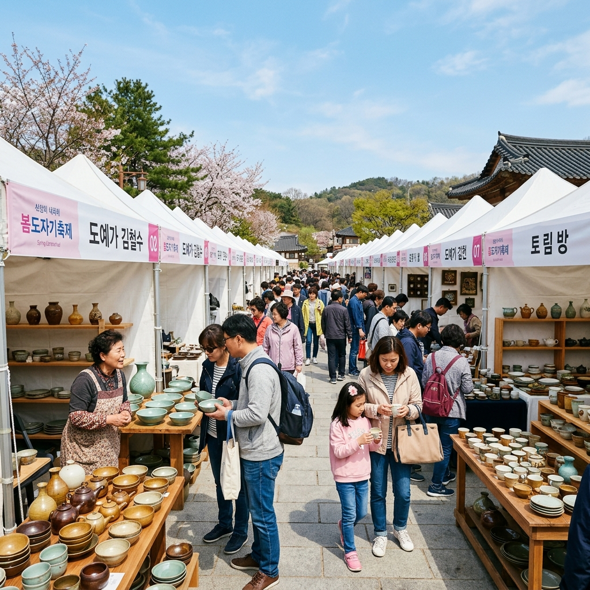
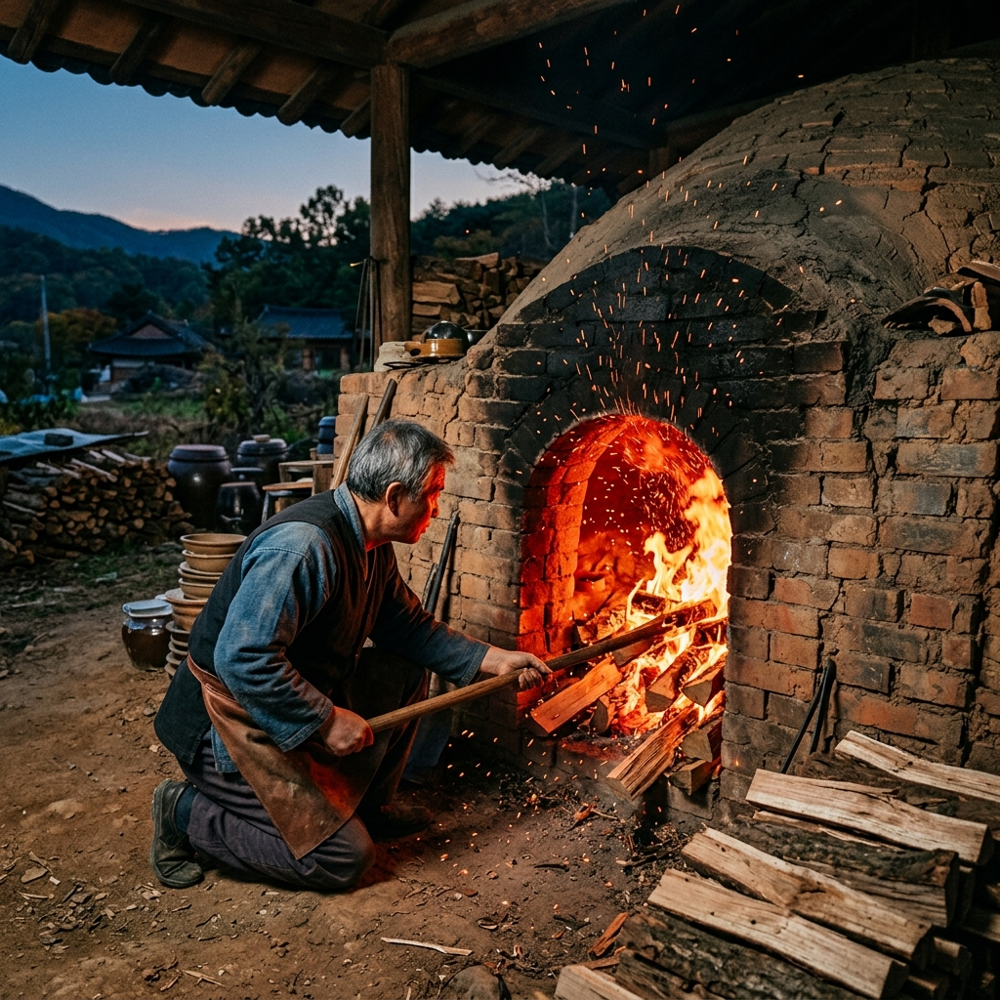

여주 도자기축제 2026: 신륵사 전통 가마 체험과 생활 도자기 마켓 완벽 가이드
경기도 남한강 상류, 여주는 조선 왕실의 백자를 빚어냈던 도자기의 도시입니다. 여주 일대에는 조선 시대부터 이어져 내려오는 가마터가 400여 곳이 확인되며, 지금도 수십 명의 현역 도예가들이 이 땅에서 흙과 불의 예술을 이어가고 있습니다. 2026년 여주 도자기 세라믹축제는 신륵사 관광지 일원을 중심으로 5월 초 개최되며, 흙 반죽부터 전통 가마 소성까지 직접 체험하는 프로그램과 전국 도예 작가들의 생활 도자기 마켓이 동시에 열립니다. 손끝으로 빚는 나만의 그릇, 그 경험을 위해 여주로 떠나보세요.
1. 여주, 왜 한국 최고의 도자 도시인가
한국 도자의 역사를 거슬러 올라가면 반드시 여주에 닿습니다. 조선 전기 관요(官窯)가 설치된 이후 왕실 전용 백자를 생산하던 이 지역은, 조선 말기 관요 해체 이후에도 민간 도요지 형태로 맥을 이어왔습니다. 현재 여주시 북내면, 흥천면 일대에는 수십 곳의 현역 도예 공방이 운영되고 있으며, 각 공방은 자체 판매장을 겸해 연중 방문이 가능합니다.
여주 도자가 여타 지역과 다른 결정적 차이는 남한강 백토(白土)의 품질에 있습니다. 강변에서 채취한 철분 함량이 낮은 이 점토는 소성 후 유독 맑고 투명한 백색을 내는데, 바로 이 색이 조선 백자 특유의 '달빛 같은 흰색'을 만들어냅니다. 현대 도예가들도 이 원토의 가치를 인정해 여주를 굳이 떠나지 않는 이유가 여기에 있습니다.
5월 도자기 축제는 이 역사적 유산을 가장 생생하게 체험할 수 있는 창구입니다. 구경꾼이 아닌 직접 흙을 만지는 참여자가 되는 순간, 도자기라는 결과물 너머에 숨은 장인의 시간이 실감 나게 전해집니다.

여주 전통 도자 공방에서 물레를 돌리는 장인의 손 / AI 제작 이미지
2. 2026년 여주 세라믹축제 공식 일정 및 행사 구성
2026년 여주 도자기 세라믹축제는 신륵사 인근 여주도자세상 및 남한강변 일원에서 5월 중 개최됩니다. 정확한 개최 일정은 여주시청 공식 홈페이지(yeoju.go.kr) 및 경기관광공사 SNS를 통해 3~4월 중 확정 공지되므로, 방문 전 반드시 최신 일정을 확인하는 것을 권장합니다. 과거 데이터 기준으로는 보통 5월 첫째 주 금요일부터 일요일까지 3~4일간 운영됩니다.
주요 행사 구성은 크게 세 가지 축으로 나뉩니다. 첫째는 전통 도예 체험 부스로, 물레 체험(성인·아동 별도 코스), 전통 가마 소성 체험, 핸드빌딩(손으로 빚기) 프로그램이 운영됩니다. 둘째는 전국 도예 작가 판매 마켓으로, 도자기·도예 관련 작가 100여 팀이 직접 제작한 생활 도자기를 합리적인 가격에 판매합니다. 셋째는 전통 가마 소성 시연으로, 숙련 도예가가 전통 장작 가마에서 백자를 굽는 과정을 실시간으로 관람할 수 있습니다.
| 프로그램 | 내용 | 비용(참고) |
|---|
| 물레 체험 | 기초~중급 코스, 성인·아동 구분 운영 | 약 10,000~15,000원 |
| 핸드빌딩 체험 | 컵·접시 등 소품 직접 제작 | 약 8,000~12,000원 |
| 전통 가마 소성 관람 | 장작 가마 시연 관람 (시간대 지정) | 무료 또는 입장료 포함 |
| 생활 도자기 마켓 | 작가 100여 팀 직판 부스 | 구매 금액에 따라 상이 |
| 신륵사 연계 관람 | 고려~조선 시대 보물 다수 보유 사찰 | 입장료 별도 확인 |
3. 전통 가마 체험: 흙 반죽부터 초벌구이까지
물레 체험의 하이라이트는 바로 흙이 손끝에서 살아 움직이는 순간입니다. 물레 위에 올린 점토 덩어리가 회전력과 손의 압력만으로 위로 솟구치고, 벽면이 얇아지며 형태를 갖추는 그 순간은 처음 경험하는 사람 누구에게나 경이롭습니다. 강사의 안내 하에 약 40~60분 동안 진행되며, 완성한 작품은 건조·초벌·유약·재벌 과정을 거쳐 약 3~4주 후 우편으로 수령할 수 있습니다.
전통 장작 가마 소성 시연은 현대 전기 가마에서는 절대 볼 수 없는 불꽃과 연기의 드라마를 선사합니다. 장작을 하루 이상 투입하며 가마 내부 온도를 1,300℃ 이상으로 올리는 과정에서, 화구(火口)에서 뿜어져 나오는 불길의 색깔로 내부 온도를 감지하는 장인의 눈썰미는 수십 년 경력의 산물입니다. 소성 완료 후 가마 문을 여는 순간 비로소 드러나는 도자기의 빛깔은, 같은 조건에서도 매번 조금씩 달라지는 '불의 예술'이 무엇인지를 직접 보여줍니다.
아이와 함께 방문하는 경우라면 핸드빌딩 코스가 더 적합합니다. 물레 없이 손으로만 점토를 다루는 이 프로그램은 초등학생도 큰 어려움 없이 참여할 수 있으며, 꽃잎·도장으로 표면에 패턴을 새기는 과정에서 아이의 창의력이 자연스럽게 발휘됩니다.
4. 생활 도자기 마켓: 작가 작품 쇼핑 실전 가이드
전국 도예 작가 100여 팀이 한자리에 모이는 생활 도자기 마켓은 공방 직판 가격으로 구매할 수 있어 도심 편집숍 대비 30~50% 저렴한 경우가 많습니다. 특히 신진 작가의 경우 온라인에서는 찾기 어려운 초기 작품을 직접 만져보고 구매할 수 있다는 희소성이 있습니다.
마켓 탐방 시 몇 가지 실용적인 팁을 소개합니다. 첫째, 개장 직후 30분 내가 가장 좋은 선택지를 확보할 수 있는 골든타임입니다. 인기 작가의 부스는 오전 중에 대부분 팔리므로 늦게 도착하면 아쉬울 수 있습니다. 둘째, 세트 구성(컵 2개+접시 1개 등)으로 구매하면 단품보다 할인이 적용되는 경우가 많습니다. 셋째, 깨지기 쉬운 도자기를 안전하게 가져가기 위한 완충 포장재는 주최 측에서 준비해 주는 부스가 많으므로 사전에 물어보세요.

전국 도예 작가들의 생활 도자기 직판 마켓 현장 / AI 제작 이미지
5. 신륵사와 명성황후 생가: 도자기 이후 연계 코스
여주 도자기축제 장소인 신륵사 관광지 바로 옆에는 신륵사(神勒寺)가 자리합니다. 고려 시대 창건된 이 사찰은 남한강변 낮은 언덕 위에 위치해 경내에서 바라보는 강 풍경이 압도적입니다. 3층 석탑과 다층 전탑, 조사당 등 보물급 문화재를 다수 보유하고 있으며, 5월에는 경내 꽃나무들이 만개해 절 자체가 하나의 꽃정원처럼 변합니다. 축제 관람 전후로 30분~1시간 정도 여유를 두고 신륵사를 둘러보는 것을 적극 권합니다.
차량으로 약 15분 거리에는 명성황후 생가(洪陵)가 있습니다. 조선 말 격동의 세월을 살았던 명성황후 민씨가 태어난 곳으로, 복원된 안채와 사랑채, 그리고 황후의 어린 시절을 담은 전시관을 갖추고 있습니다. 역사 교육을 겸한 가족 코스로 손색이 없으며, 봄철 관람객이 특히 많은 명소입니다. 여주시 시내에서 여주 도자기 공방 투어까지 더하면 하루를 넉넉히 채울 수 있는 알찬 일정이 완성됩니다.
6. 여주 한우와 쌀: 도자기 축제 먹거리 루트
여주 한우는 경기도 내에서도 손꼽히는 육질로 유명하며, 시내 한우 타운에는 도매가에 가까운 가격으로 고기를 즐길 수 있는 식당이 밀집해 있습니다. 특히 '여주 한우'라고 쓰인 간판 중에서 지역 농협과 직거래하는 정육식당을 고르면 1++ 등급 한우를 합리적인 가격에 만날 수 있습니다. 5월 연휴 기간에는 유명 식당은 대기 줄이 길어지므로 오픈런이나 사전 예약이 필수입니다.
여주는 또한 여주 쌀로도 이름이 높습니다. 남한강 충적토에서 재배되는 이 쌀은 밥알의 윤기와 점성이 뛰어나 왕실 진상미로 쓰였던 역사가 있습니다. 여주역 인근 쌀 특산물 판매장에서 구매하거나, 축제 현장의 지역 특산물 부스를 통해 소포장 상품으로 구입할 수 있습니다. 쌀로 만든 여주 생막걸리도 빼놓을 수 없는 지역 특산품으로, 축제 기간 푸드트럭에서 쉽게 만날 수 있습니다.
7. 주차장 및 교통: 수도권에서 1시간 30분
서울 강남에서 출발 시 자가용으로 영동고속도로 여주IC를 통해 약 1시간 10분~1시간 30분이 소요됩니다. 축제 기간에는 임시 주차장이 별도 운영되며, 축제장 입구에서 셔틀버스가 주차장과 행사장을 순환합니다. 대중교통 이용 시 서울 동서울터미널에서 여주시외버스터미널까지 약 1시간 소요되며, 터미널에서 신륵사까지는 시내버스 또는 택시로 10~15분이면 도착합니다.
수도권 전철 이용 시 경강선 여주역이 최종 목적지입니다. 여주역에서 신륵사 방면 시내버스가 배차되므로, 버스 시간표를 미리 앱으로 확인하고 이동하면 편리합니다. 경강선은 판교·이매역에서 환승 가능하므로 분당선이나 신분당선 이용자라면 환승 한 번으로 여주까지 도달할 수 있습니다.
8. 온라인 사전 예매 방법과 할인 팁
여주 도자기 체험 프로그램은 여주도자세상 공식 홈페이지 또는 경기관광공사 홈페이지(gggt.or.kr)를 통해 사전 예약이 가능합니다. 인기 프로그램(물레 체험, 전통 가마 소성 관람 등)은 축제 공지 후 빠르게 마감되므로, 공식 SNS를 팔로우해 예약 오픈 시각을 미리 파악해 두는 것이 중요합니다.
할인 혜택으로는 통상 가족 패키지(성인 2인+아동 1인 기준 세트 할인), 경기도민 우대 할인, 그리고 다회 체험 패키지(2가지 이상 프로그램 동시 신청 시 10~15% 할인)가 운영됩니다. 현장 결제 대비 온라인 사전 예매 시 5% 추가 할인이 적용되는 경우가 많으니 귀찮더라도 미리 예매하는 것이 알뜰한 선택입니다.

전통 장작 가마에서 백자를 굽는 불의 예술 / AI 제작 이미지
9. 가족 나들이 최적 동선: 반나절 vs 하루 비교
반나절 코스(약 3~4시간)는 신륵사 관광지 도착 → 핸드빌딩 체험(아동 동반 시) 또는 물레 체험(성인) → 생활 도자기 마켓 쇼핑 → 신륵사 경내 짧은 산책 → 귀가로 구성됩니다. 이 동선이라면 체험 1가지와 쇼핑을 모두 즐기면서 피로도를 최소화할 수 있습니다. 자녀가 유아라면 핸드빌딩 대신 색칠 도자기 체험(완성품에 그림 그리기)을 선택하면 연령 제한 없이 참여 가능합니다.
하루 코스(약 7~8시간)는 여주 한우 점심 → 물레 체험 → 전통 가마 시연 관람 → 마켓 쇼핑 → 신륵사 탐방 → 명성황후 생가 → 여주 쌀막걸리와 저녁으로 마무리하는 일정입니다. 이동 거리가 크지 않아 어린 자녀를 동반하더라도 무리 없이 소화할 수 있으며, 하루가 끝날 때쯤이면 손에는 직접 빚은 도자기 체험 영수증과 마켓에서 고른 예쁜 머그컵이 함께 들려 있을 것입니다.
10. 에디터의 마무리 한마디
흙을 빚는 일은 인류가 가장 오래 이어온 창조 행위입니다. 수천 년 전 사람들도 지금과 똑같이 이 촉감을 경험하며 그릇을 만들었고, 그 그릇에 음식을 담아 가족과 나누었습니다. 여주 도자기 축제는 그 연결고리를 직접 잡아보는 경험입니다.
완성된 도자기가 3주 후 집으로 배달될 때, 그 택배 상자를 열며 '내가 이걸 만들었구나'라는 감각이 잠시나마 일상의 속도를 늦춰줄 것입니다. 5월의 남한강 바람과 흙냄새, 그리고 불꽃의 온기를 찾아 여주로 한 번 떠나보세요.
#여주도자기축제
#여주세라믹축제
#도자기체험
#신륵사
#물레체험
#5월축제
#경기도여행
#가족나들이
#전통공예
#여주한우